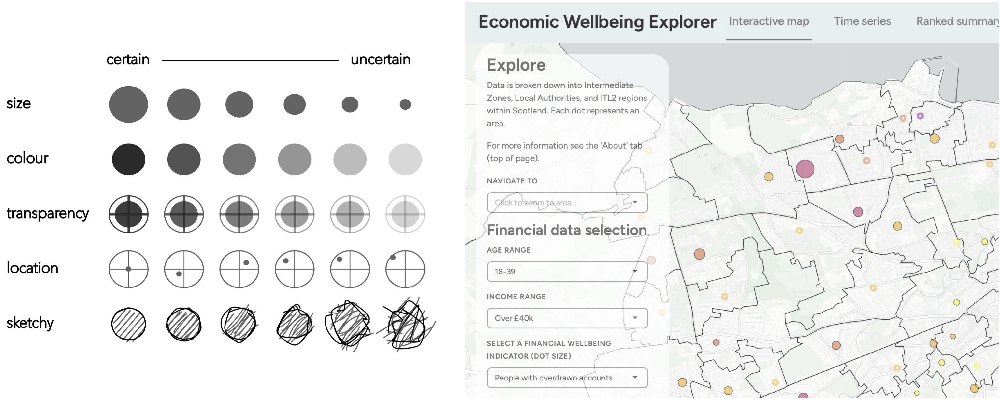
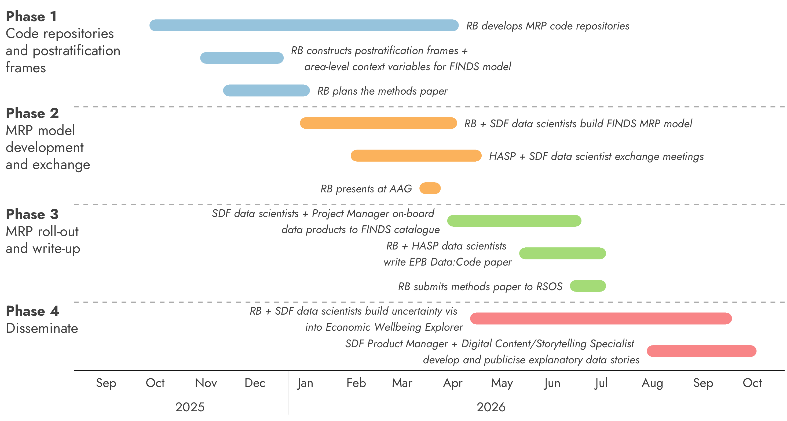

MRP-SMART
Estimating place-based and cross-sectional population outcomes from everyday transactions and behaviours
Background / Summary

MRP-SMART is a collaboration between the Financial Data Service (FINDS) and the Healthy and Sustainable Places (HASP) Data Service. The project will demonstrate how reliable, de-biased estimates of neighbourhood-level population outcomes can be generated from non-representative smart data – individual observations describing everyday behaviours and transactions. It will do so via Multilevel Regression and Poststratification (MRP) (Gelman and Little 1997), a technique for small area estimation (SAE) little-used outside of political polling, but with obvious potential for addressing issues of representativeness in smart data research.
MRP-SMART will:
Contribute a collection of data products estimating the financial well-being of populations living in GB neighbourhoods. The data will form a much-needed (JRF 2024) profile of local financial vulnerability, addressing issues of misallocation and poor targeting of recent, high-profile interventions to alleviate financial hardship (Ray-Chaudhuri et al. 2023; DWP 2025).
Pioneer the the application of MRP for smart data research. A flagship methodological paper will establish a case and framework for implementing MRP on smart datasets; and separately, peer-reviewed open source code that lowers the barrier of entry to MRP modelling. Together, these products will provide researchers and statistical agencies with principled yet practical tools to generate de-biased population estimates and communicate them via modern uncertainty visualization (Beecham 2025) in a responsible, transparent and policy-relevant way.
Why MRP for simulating population outcomes and behaviours?
In social research, samples from surveys are routinely used to estimate the characteristics of a population – levels of financial distress, dietary and physical activity, pro-environmental attitudes. With a sufficiently large sample, we can directly estimate the prevalence of target outcomes at subnational (regional) level. If we want to look at smaller-scale geographies – in GB, the 40k LSOA / Data Zone neighbourhoods which tend to really discriminate social outcomes – direct estimation soon fails and we must turn to model-based approaches, or small area estimation (SAE).
In MRP, the outcome of interest is first modelled (MR) from survey microdata using a range of individual (respondent) demographics and group (area-level) context variables. Next, a ‘poststratification frame’ is constructed, whereby for every small-area unit, joint counts are derived from mainly Census data for the different demographics and area-level variables used in the model. At poststratification (P), predicted probabilities of the outcome are extracted from the model for each row of the postsratification frame. Multiplying these probabilities by the joint counts, we can estimate the extent that the target outcome occurs in the small-area.
The key advantage of MRP lies in its use of Bayesian hierarchical models. It is common in SAE that certain demographic combinations have little or no representation in sample data. In these cases, the model uses information from related groups to make more accurate estimates, known as partial pooling. In a famous example, Gelman et al. (2016) used MRP on a succession of highly unrepresentative polls of Xbox customers, and documented how Xbox-derived forecasts of 2012 US presidential election were in-line with those of leading pollsters using traditionally sampled-surveys. Additionally, because of the fully-Bayesian approach, posterior distributions are generated for each prediction. This means that for any combination of spatial unit and demographic type interpretable indicators of the uncertainty around estimates can be reported.
Why MRP for FINDS?
FINDS works with bank transaction records of over 5 million GB-based customers, and from here derives a set of ‘financial health’ indicators of those customers: people with persistently overdrawn accounts, living beyond their means, with low emergency resilience. These indicators are presented to policy-makers and service providers via an interactive web-based dashboard, the Economic Wellbeing Explorer. This tool allows users to subset by geography, demographics and individual financial indicators. While 5 million customers is undoubtedly a large dataset, it is not a representative or probabilistic sample. There is no guarantee that the customers recorded in the dataset accurately reflect the financial health of those sub-populations. Since direct estimation is used, the sample becomes surprisingly small, unreliable and potentially disclosive when subset by combinations of demographics and area-level variables. At present, data are therefore available at reasonably aggregated geographic spatial units and age bands.
MRP-SMART is a significant addition to FINDS and the Economic Wellbeing Explorer tool. Unique estimates of ‘financial health’ could be generated for any combination of spatial unit and demographic combination, without risking disclosure and with interpretable uncertainty information expressed in the natural units of each outcome.
Why MRP for HASP and SDRUK?
MRP-SMART presents a real methodological opportunity for smart data research. The current standard for SAE, spatial microsimulation (SPM), relies on strong assumptions around individual sample data and their ability to discriminate target outcomes. MRP not only addresses these assumptions directly (Beecham and Clark 2025), but is well-suited to the general characteristics of smart datasets. The project will contribute code products that enable other smart data researchers to generate MRP-derived estimates on their own behavioural datasets. Built into the project is an exchange of learning between data scientists at FINDS and those at HASP, who will implement MRP on HASP’s SPM-derived place-based estimates on the Inclusive Economy and Consumer Vulnerability index (Adcock et al. 2020), as well as behavioural datasets describing mobility and physical activity behaviours that are currently being acquired by that data service.
Project team
Roger Beecham (RB), University of Leeds (HASP)
RB is experienced in MRP and Bayesian modelling, and is an international expert in uncertainty visualization and analysis (see Beecham 2025). RB will guide Smart Data Foundry (SDF) data scientists in building MRP models, deriving population estimates from FINDS data and incorporating visualization techniques for their representation in the Economic Wellbeing Explorer dashboard. He will develop with colleagues at HASP open source code demonstrations for MRP, aimed at the wider smart data research network, and prepare the key paper output – pioneering MRP for smart data research. RB is costed-in at 22% over a 12-month period.
Data Scientists, University of Leeds (HASP)
HASP data scientists will be involved in the exchange of learning with RB and SDF data scientists. Included in our costing is travel budget for 2x HASP data scientists to visit SDF in Edinburgh.
Data Scientists (DS, SDS, HDS), Smart Data Foundry (FINDS)
From SDF is a Data Scientist (40% over 9 months), Senior Data Scientist (40% over 9 months) and Head of Data Science (5% over 9 months). The DS and SDS separately specialise in data pipelines and front-end tool development. Both will work under RB’s guidance to implement the MRP models and generate predictions for different demographic and small area combinations. They will also develop the Economic Wellbeing Explorer tool. The HDS will work in an advisory capacity.
Product Manager (PM) and Digital Content and Storytelling Specialist (DC&S), Smart Data Foundry (FINDS)
SDF’s PM (10% over 4 months) will support the delivery and curation of data products on the FINDS data catalogue, and the DC&S (20% over 2 months) will produce blog posts, data stories and engagement workshops aimed at explaining MRP-SMART data products to target end-users.
Aims and objectives
The project delivers on SDR UK objectives insofar as it aims to:
1. Address a methodological challenge in smart data research
Bringing MRP outside of the political polling use case is an exciting prospect. The project will provide researchers across the network with practical tools for addressing representativeness issues in smart data outputs.
2. Promote trustworthy and responsible use of sensitive data
Each data point generated through the project will be a modelled value, with interpretable uncertainty ranges, rather than a direct estimate from a sample. Not only does this mean that the small-area estimates are not disclosive of individuals, but coupled with the use of cutting-edge uncertainty visualization, MRP-SMART will be an exemplar for how uncertainty reasoning can be made intrinsic to smart data products.
3. Generate high-impact data products that enhance existing data assets
The enhanced FINDS datasets – de-biased and non-disclosive estimates describing the financial realities of populations at neighbourhood and cross-sectional level – will be a unique resource for policymakers and service providers.
Expected outputs and deliverables
1. Data products and tool
Estimates of population-level financial outcomes, published across area-level and demographic dimensions, administered on the FINDS data catalogue and implemented in the Economic Wellbeing Explorer dashboard.
Alongside the data products will be data stories that explain how MRP-based estimates are generated. These efforts will assist reliable interpretation of model outputs.

2. Methodological framework paper
A flagship journal paper, in Royal Society Open Science, pioneering MRP for smart data research.
- Provisional title: From smart data to reliable estimates: A framework for de-biasing and validating estimates of unknown outcomes at small-area level
- Keywords: Multilevel regression and poststratification; smart data research; non-representative samples; small-area estimation; spatial microsimulation.
3. Peer-reviewed code products
Transferable code products, with tailored guidance on constructing postratification frames.
A demo for end-to-end MRP modelling has already been initiated as part of this proposal. The code ‘primer’ for MRP-SMART, developed collaboratively by RB and HASP data scientists, will be published via the Data:Code section of Environment & Planning B (Arribas-Bel et al. 2021) (EPB), a practice for which RB has recent track-record (Beecham et al. 2025).
Expected impacts
De-biased population estimates for responsible policymaking
In reliably estimating local financial vulnerability, the FINDS data products will fill an identified evidence gap (JRF 2024) and lead to better targeting and evaluation of interventions to address cost-of-living pressures (Ray-Chaudhuri et al. 2023; DWP 2025).
Ground-breaking methods for smart data research
MRP-SMART establishes a foundation – a framework paper and peer-reviewed code products – to de-bias smart data. By giving researchers the tools to apply MRP across new domains, it has the potential to provoke a new sub-field in smart data research.
Total cost and justification of resources

The planned activity is organised into four phases (Figure 3). While funds will be delivered within the 2025/6 financial year, substantive work on the project will run over 12 months, starting October 2025 and ending September 2026.
Costs are detailed in the attached spreadsheets, completed separately by HASP (University of Leeds) and FINDS (SDF). The total full economic cost of the project is £114,051: £50,600 claimed from University of Leeds; £63,451 from SDF. In addition to staff time are travel costs: for RB to make three visits to SDF in Edinburgh; the two HASP data scientists to make two visits each; and RB to attend AAG 2026.
Dependencies
FINDS microdata
Work on FINDS individual-level data will be performed within the SDF TRE. All SDF data scientists have approval to work in this environment. RB and HASP data scientists will also require access to the SDF TRE.
SDF are responsible for this dependency and have a clear process in place. Each applicant needs to pass a “Standard Disclosure” or “DBS Check”, attend an online training session covering safe use of the TRE and sign a TRE user agreement.
Census and area-level context data
These data are used for the poststratification frames, and at the maximum level of restriction require Safeguarded access. All researchers included in this proposal already have this level of access. The lowest level of aggregation at which any other context variables will be collected is LSOA. It is very unlikely that dependencies on these data will be prohibitive.
Risks
That code libraries for MRP modelling cannot be used within SDF’s TRE
Mitigation: SDF data scientists have consulted our demo for end-to-end MRP modelling. We can confirm that the libraries explained in the demo are compatible with that TRE.
FINDS microdata is not suitable for MRP modelling
Mitigation: Although information on FINDS microdata is not attribute-rich in its demographics, containing only age and sex, the fine-grained neighbourhood (LSOA) in which customers live is consistently recorded, as with many smart datasets. This means that area-level context variables, which in MRP have been demonstrated to be highly descriminating (Gelman et al. 2016), can be incorporated into the modelling process. We are therefore confident that MRP can be successfully applied to FINDS microdata. That MRP is ideally practiced in situations where this individual geographic context is known (Hanretty 2019), further reinforces the opportunity in bringing MRP to smart data research.
Ethics
Ethical approval for use of data
SDF will complete a Data Protection Impact Assessment (DPIA) and seek ethical approval for the entire project through University of Edinburgh.
Data privacy and disclosure
Models using FINDS microdata will be built end-to-end by SDF data scientists within the SDF TRE, supported by RB. Data products – modelled estimates and uncertainty bands – will be published via SDF FINDS data catalogue, and by default have Safeguarded access. As the data products are derived from model probabilities, they are entirely synthetic and cannot be disclosive of individuals.